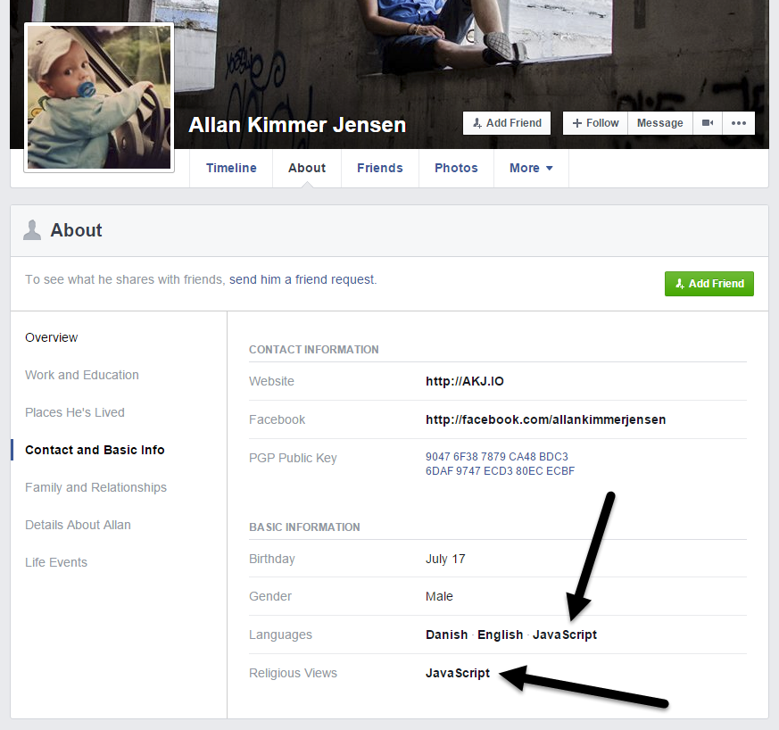
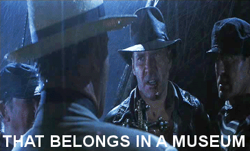

Chrome Dev Tools
Tips & Trick for better debugging!
Allan Kimmer Jensen
Front-end @ Pentia A/S

Agenda
Debugging in general, and stuff that you can use right now. No need to wait.
if you use
alert()
for debugging you should know...

What should I do then?
Console API
- console.log()
- console.table()
- copy()
- monitor()
- debugger;
console.log()
More about the Console API in the next slides!
function namingThingsIsReallyHardConsole(name) {
var hello = 'bonjour';
console.log(
'logged that the name was %s, cool!',
name
);
return hello + ' ' + name;
}
console.table()
console.table();
fetch('http://beta.json-generator.com/api/json/get/N1m44mUZe', {
method: 'get'
}).then(function(response) {
return response.json(); // Convert to JSON
}).then(function(json) {
console.table(json);
});
copy()
copy()
fetch('http://beta.json-generator.com/api/json/get/N1m44mUZe', {
method: 'get'
}).then(function(response) {
return response.json(); // Convert to JSON
}).then(function(json) {
copy(json);
});
copy(document.querySelector('head'));
monitor()
monitor()
// We'll define a function
function doSomethingStupid(string, number) {
return number + string;
}
// Monitor the function
monitor(doSomethingStupid)
// Call it and watch the magic!
doSomethingStupid(7, 'string')
debugger;
Opens the debugger if the Dev Tools are open.
function namingThingsIsReallyHardDebugger(name) {
var hello = 'bonjour';
debugger;
return hello + ' ' + name;
}
Note: Closure Scope
Browsers might optimize away Closure Scope variables. Watch out for this, as it could fool you.
function whereDidMyClocureScopeGo() {
var x = 1, y = 2, z = 3;
(function() {
// In here the debugger wont have access to the full Closure Scope
debugger;
x++;
})();
}
There's much more.
Like console.time(), grouping, coloring and the list goes on!
Other stuff:
Event Listener Breakpoints
Script Blackboxing
Find in all files
Event Listener Breakpoints
stop 🔨-time!
After we fixed that one, we can now disable it again.
Let's continue...
Script Blackboxing
jQuery is not interesting most of the time.
Search
Use ctrl+shift+f to find in all files.
Use ctrl+f to find in current file or the log.
Let's find somethingReallyNice
Bonus: Jump to a file
ctrl+p will open a window, type in your file name, and bam!
What else can we do?
Remote Debugging Protocol
Debug node.js from Chrome Dev Tools.
Do all kinds of other neat stuff in the future.
Plugins
You can do plugings that use lowlevel debugging.
I made one for fun, called SongPopper.
Questions?
Also, thanks for listning!